选择适合您平台的安装包，几分钟即可完成安装
打开 Hi Design 首页，页面会自动识别您的操作系统，显示对应的下载按钮。
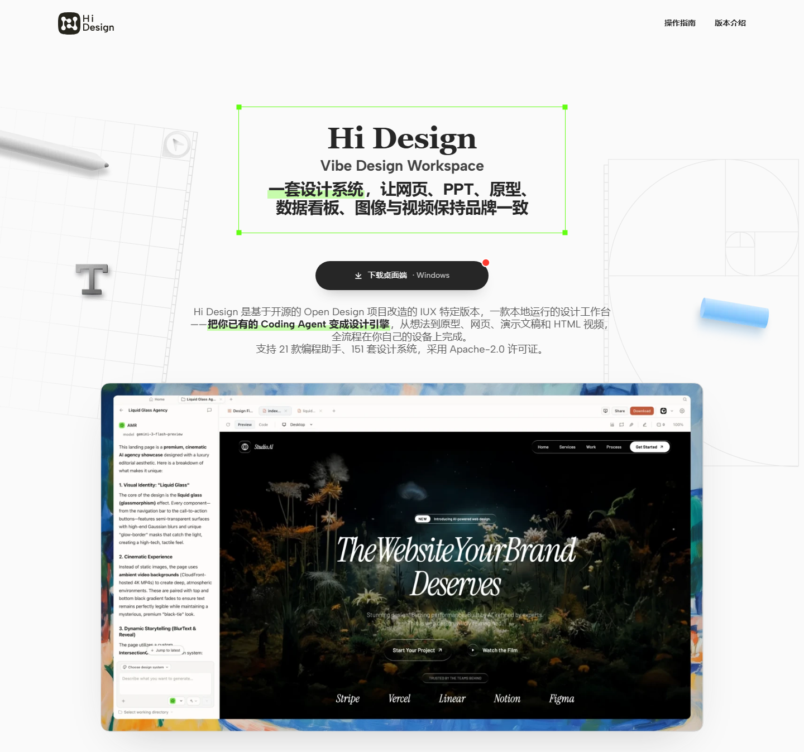
确认显示的版本与您的系统一致后，点击下载按钮即可开始下载。
.exe 安装文件；macOS 用户会得到 .dmg 磁盘映像文件。双击下载的文件，按照安装向导提示完成安装。
Windows：双击 .exe 文件运行安装向导。如果系统提示"Windows 已保护您的电脑"，请点击"更多信息" → “仍要运行"。
macOS：双击 .dmg 文件挂载磁盘映像，然后将 Hi Design 应用拖拽到 Applications 文件夹中。
安装完成后，在开始菜单（Windows）或 Applications 文件夹（macOS）中找到 Hi Design，双击即可启动。
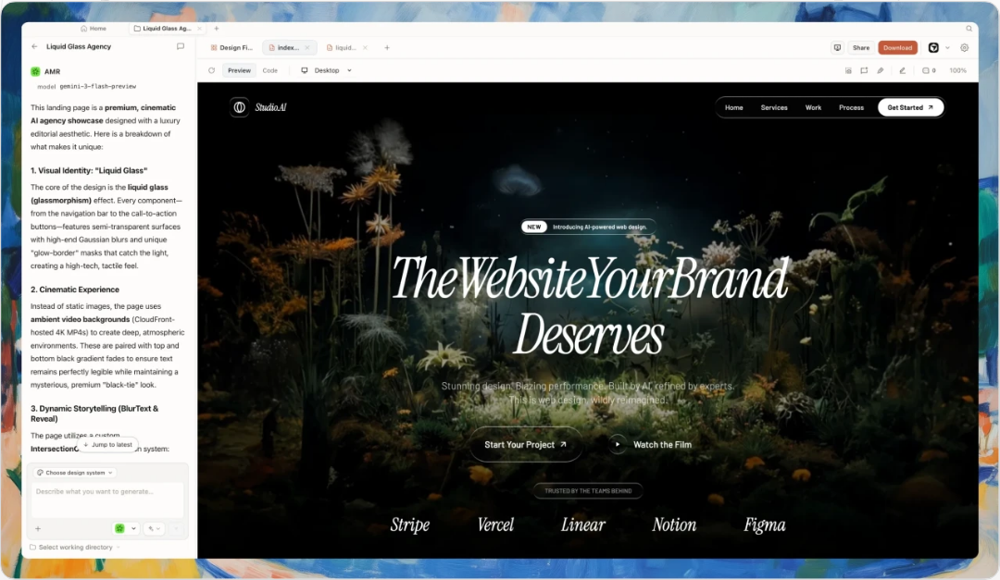
在 Web 界面中选择并配置本地命令行代理工具，让 Hi Design 通过你本机安装的 CLI 执行设计任务
在 Hi Design 首页的右上角，找到「本地 CLI」按钮并点击，打开配置面板。
点击「本地 CLI」按钮后，会弹出一个下拉面板，顶部显示两种执行模式：
选择「本地 CLI」模式后，系统会自动扫描 PATH 中可用的 CLI 工具。
点击下拉面板底部的「打开执行设置」，进入详细的执行模式设置弹窗。
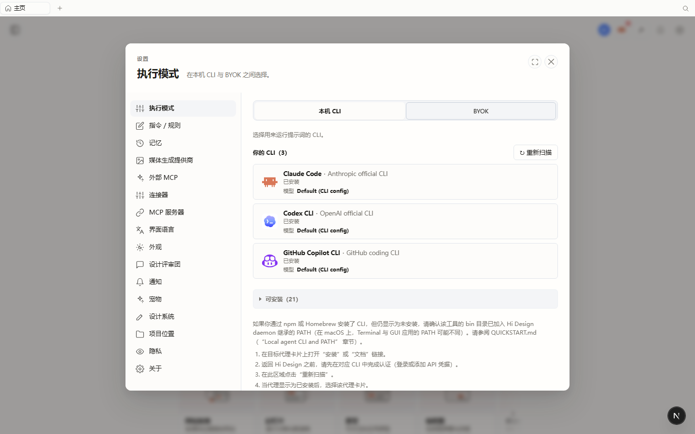
执行设置页面分为左右两部分：
在「执行模式」页面的「你的 CLI」区域，可以看到系统已扫描到的本地 CLI 工具列表。每个 CLI 卡片显示：
点击想要使用的 CLI 卡片即可选中该代理工具。
在「你的 CLI」列表下方，点击「可安装」展开区域，可以看到更多可安装的 CLI 工具列表（共 21 个）。每个条目显示：
点击「安装」按钮，按照提示完成对应 CLI 的安装。安装完成后，点击「重新扫描」按钮刷新列表。
如果安装或卸载了 CLI 工具，可以点击「你的 CLI」区域右上角的「重新扫描」按钮，让 Hi Design 重新扫描 PATH 中的可用 CLI。
配置完成后，关闭设置弹窗返回首页。确认右上角「本地 CLI」按钮显示你选择的代理名称（如「本地 CLI·Claude Code·Sonnet」），表示配置已成功生效。
此时你可以在输入框中输入提示词，点击「发送」按钮，Hi Design 将通过你配置的本地 CLI 工具执行设计任务。
💡 常见问题
Q: 为什么 PATH 中未发现可用 CLI？
A: 请确保已安装对应的 CLI 工具（如 claude、codex 等），并且已将其添加到系统 PATH 环境变量中。安装后需要点击「重新扫描」按钮刷新列表。在 macOS 上，Terminal 与 GUI 应用的 PATH 可能不同，需要特别注意。
Q: 如何切换回默认代理？
A: 重新打开本地 CLI 配置面板，在「你的 CLI」列表中选择其他代理工具即可。或者切换到「自带 Key」模式，使用自己的 API Key 直接调用模型。
Q: 安装了 CLI 但扫描不到怎么办？
A: 请按照以下步骤排查：1）在目标代理卡片上打开「安装」或「文档」链接；2）返回 Hi Design 之前，请先在对应 CLI 中完成认证（登录或添加 API 凭据）；3）在此区域点击「重新扫描」；4）当代理显示为已安装后，选择该代理卡片。
了解 Hi Design 内置的设计系统，选择适合您项目的视觉规范。默认使用 HUI 设计系统，开箱即用
Hi Design 默认使用 HUI 设计系统，由海康 HUI 设计 token 整理而成。首次打开 Hi Design 时，无需任何操作，系统已自动采用 HUI 作为默认设计系统。
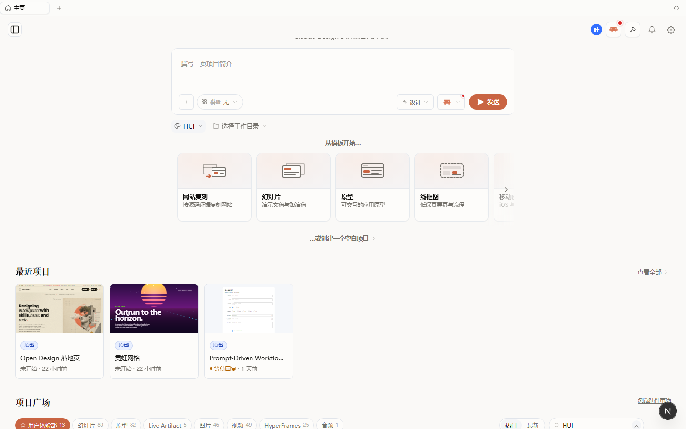
HUI 设计系统的特点：
如果需要切换设计系统，在 Hi Design 首页的输入框下方，找到设计系统按钮（默认显示「HUI」）并点击，打开设计系统选择面板。
点击后会弹出设计系统选择面板，面板分为左右两部分：
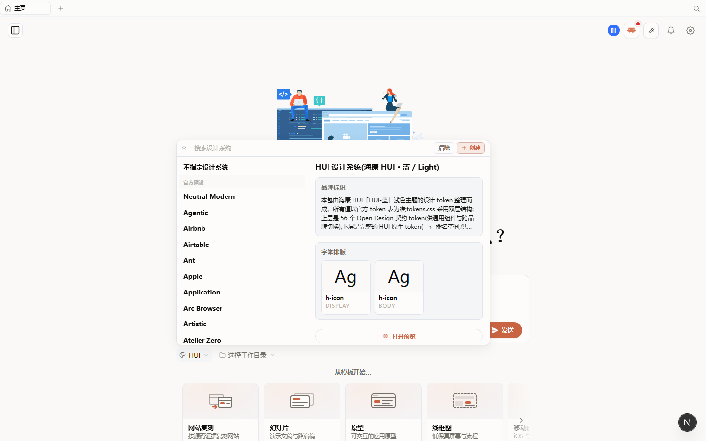
将鼠标悬停在左侧的设计系统名称上，右侧预览区域会显示该设计系统的详细信息：
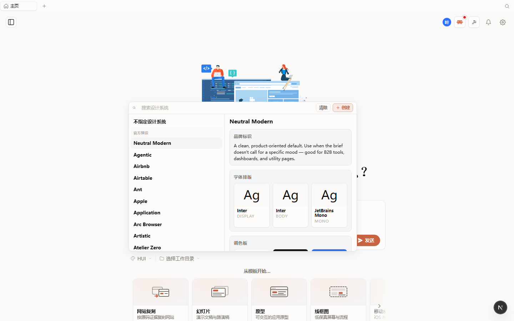
如果设计系统列表较长，可以使用面板顶部的搜索框快速查找。输入关键词（如「HUI」），列表会实时过滤匹配的设计系统。
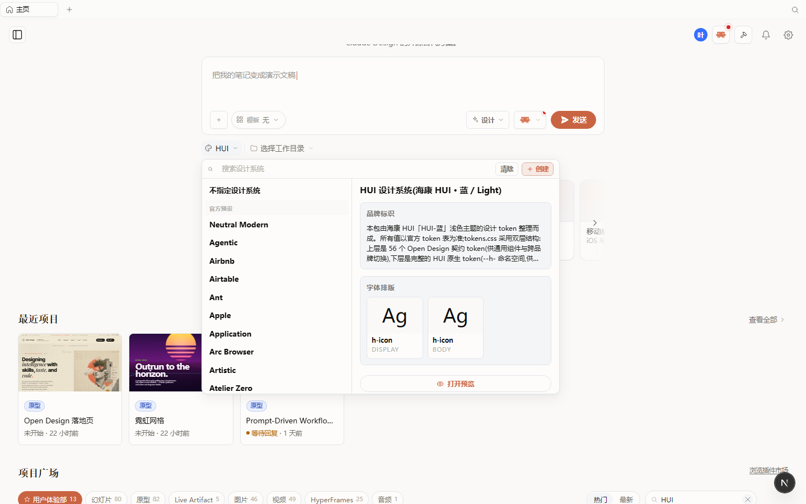
在列表中找到想要使用的设计系统，点击即可选中。选中后，面板底部的按钮会显示「打开预览」，点击可以查看更详细的设计系统预览。
如果内置的设计系统无法满足需求，可以点击面板右上角的「创建」按钮，创建自定义设计系统。
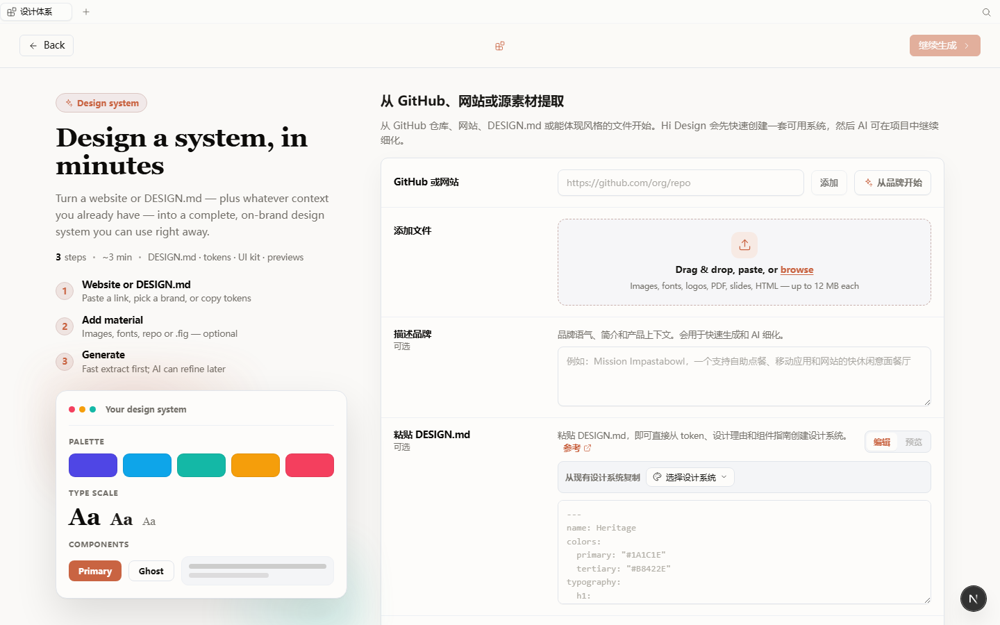
创建设计系统需要三个步骤：
您也可以通过 GitHub 仓库、网站、DESIGN.md 或能体现风格的文件开始创建。Hi Design 会先快速创建一套可用系统，然后 AI 可在项目中继续细化。
选择设计系统后，关闭选择面板返回首页。确认输入框下方的设计系统按钮显示您选择的名称（如「HUI」），表示设计系统已成功切换。
此时您在输入框中输入提示词并发送，Hi Design 将使用您选择的设计系统的视觉规范来生成设计。
💡 常见问题
Q: 默认使用的是什么设计系统？
A: Hi Design 默认使用 HUI 设计系统，由海康 HUI 设计 token 整理而成。首次打开应用时无需任何配置，系统已自动采用 HUI 作为默认设计系统。如果您没有特殊需求，直接使用默认设置即可。
Q: 设计系统选择面板加载很慢怎么办？
A: 设计系统列表需要从服务器加载，请确保网络连接正常。如果加载时间过长，可以尝试刷新页面或检查网络连接。
Q: 如何切换回默认设计系统？
A: 重新打开设计系统选择面板，选择「HUI」即可切换回默认设计系统。或者选择「不指定设计系统」来使用系统默认设置。
Q: 自定义设计系统可以分享给团队成员吗？
A: 可以。创建的设计系统会保存在您的账户中，团队成员可以在设计系统列表中看到并使用。
掌握 Skill 技能的选择与使用，让 AI 按照特定能力执行设计任务
在 Hi Design 首页的输入框中，输入 "@" 符号，系统会自动弹出技能选择面板。
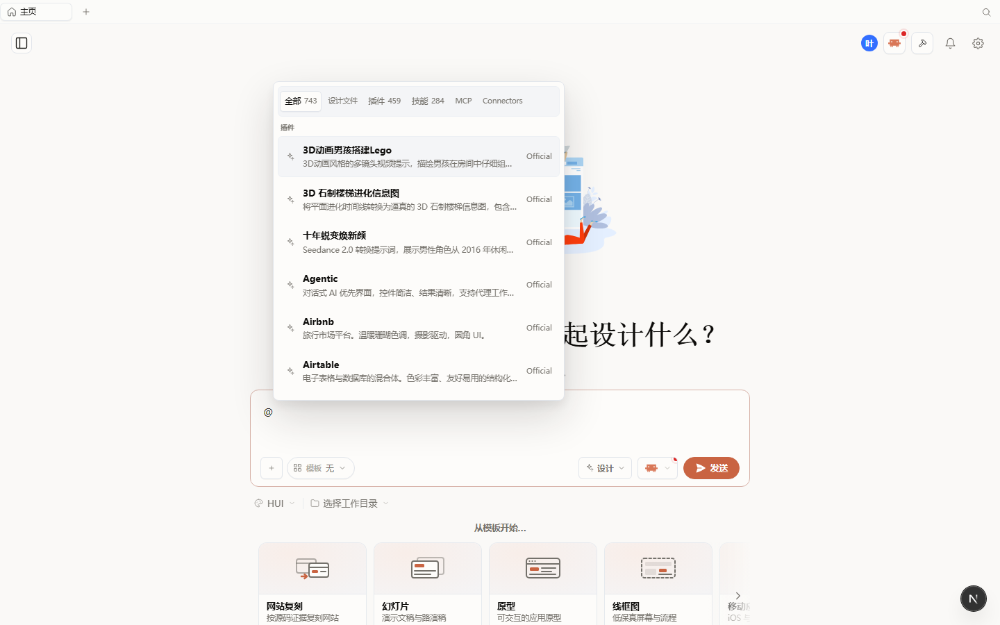
技能选择面板顶部显示多个分类标签：
在技能选择面板中，点击「技能」标签，切换到技能列表视图。这里展示了所有可用的 AI 技能，每个技能卡片显示：
在技能列表中，点击想要使用的技能条目，该技能会被插入到输入框中。然后您可以继续输入设计需求，AI 将按照该技能的能力来执行设计任务。
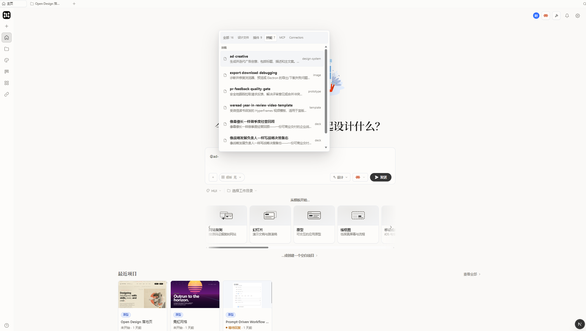
除了通过 "@" 触发技能选择面板外，您还可以通过左侧导航菜单来浏览和管理技能：
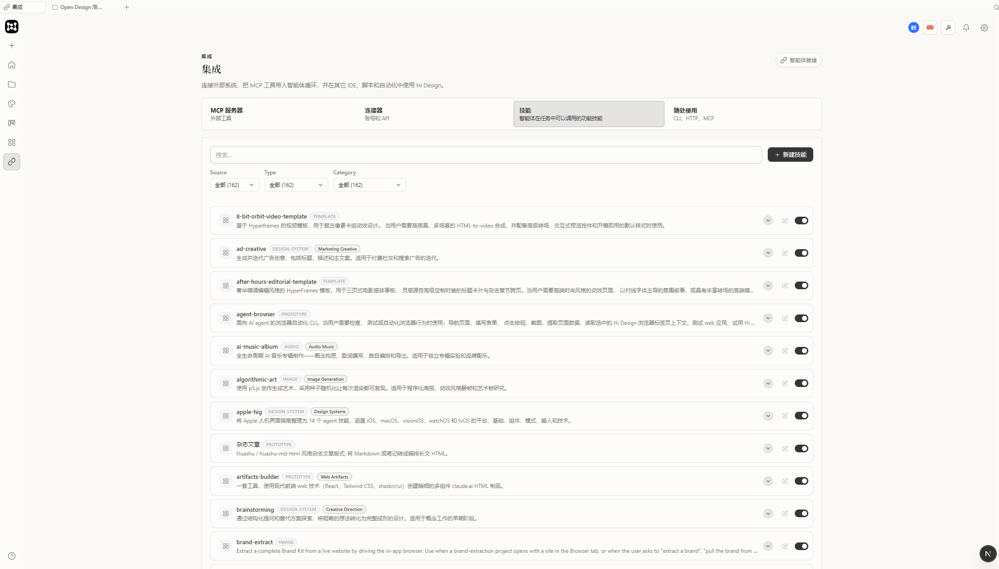
如果内置的技能无法满足您的需求，您可以创建自定义技能。在「集成」>「技能」页面中，点击「新建技能」按钮，按照提示创建属于您自己的技能。
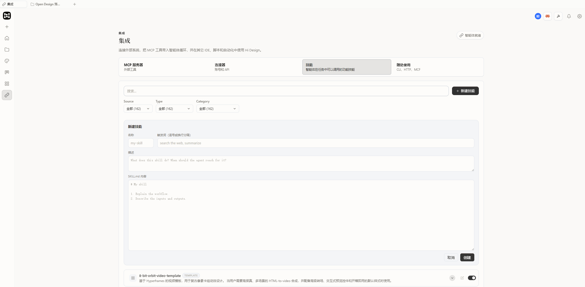
创建自定义技能需要：
💡 常见问题
Q: 输入 "@" 后没有弹出技能选择面板怎么办？
A: 请确保输入框已获得焦点（点击输入框后再输入 "@"）。如果仍然没有弹出，尝试刷新页面后重试。
Q: 可以同时使用多个技能吗？
A: 是的，您可以在输入框中选择多个技能，AI 会综合这些技能的能力来执行设计任务。
Q: 自定义技能可以分享给团队成员吗？
A: 可以。创建的自定义技能会保存在您的账户中，团队成员可以在技能列表中看到并使用。
将设计文件一键推送到 Pixso，在 Pixso 中使用 AI Builder Dev 插件进行进一步的协作与微调
在推送之前，请确保您已在 Pixso 中安装并打开了 AI Builder Dev 插件。这是接收 Hi Design 推送内容的必要条件。
在 Hi Design 中完成设计后，确保当前正在查看您想要推送到 Pixso 的设计文件。设计文件会在右侧的预览区域中显示。
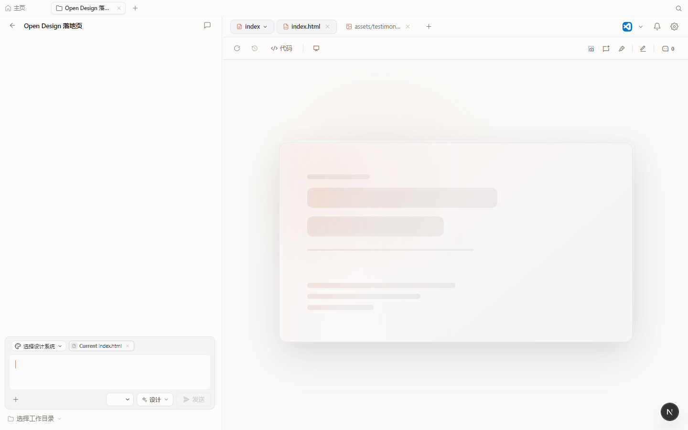
在页面右上方的工具栏中，找到「推送」按钮并点击。推送按钮位于「分享」按钮右侧，图标为一个向上的箭头。
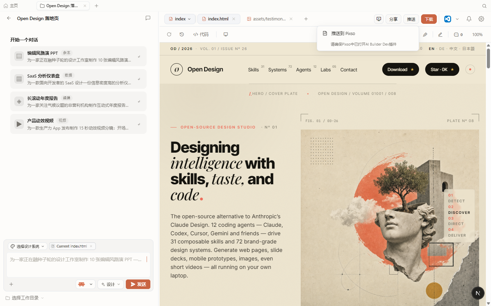
点击后会弹出一个下拉菜单，显示「推送到 Pixso」选项，并附带提示「请确保 Pixso 中已打开 AI Builder Dev 插件」。
在下拉菜单中点击「推送到 Pixso」选项，系统会立即开始将设计文件推送到 Pixso。
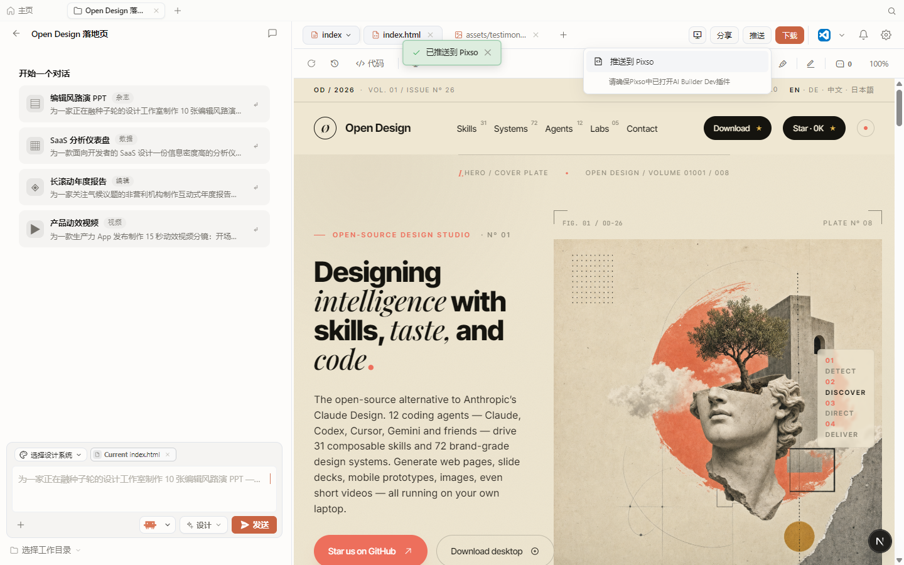
推送成功后，页面顶部会显示「已推送到 Pixso」的成功提示，表示文件已成功传输到 Pixso 平台。
推送完成后，切换到 Pixso 编辑器，您会在 AI Builder Dev 插件中看到从 Hi Design 推送过来的设计文件。
在 Pixso 中，您可以对设计进行以下微调操作：
💡 常见问题
Q: 推送失败怎么办？
A: 请检查以下几点：1）确保 Pixso 中已打开 AI Builder Dev 插件；2）检查网络连接是否正常；3）确认 Pixso 账号已登录且有权限接收推送内容。如果问题持续，尝试重新打开 Pixso 插件后重试。
Q: 推送到 Pixso 后，Hi Design 中的设计会更新吗？
A: 不会。推送是单向传输，从 Hi Design 到 Pixso。在 Pixso 中的修改不会自动同步回 Hi Design。如果您需要在 Hi Design 中继续迭代，建议保留原始设计文件，在 Pixso 中完成微调后手动将修改内容反馈到 Hi Design。
Q: 可以推送哪些类型的设计文件到 Pixso？
A: 目前支持推送 HTML 页面设计到 Pixso。包括网页布局、UI 界面、营销页面等。复杂的交互式组件和动画效果在 Pixso 中可能需要重新实现。
Q: 推送到 Pixso 后，其他团队成员可以看到吗？
A: 这取决于您的 Pixso 项目权限设置。如果 Pixso 项目是公开的或团队成员有访问权限，他们可以在 AI Builder Dev 插件中看到推送的设计文件。请确保在 Pixso 中正确设置项目权限。